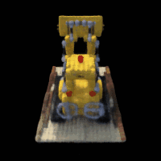
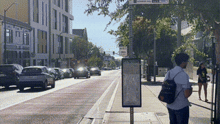

UC Berkeley · Fall 2025
Computer Vision & Computational Photography
A six-project portfolio exploring how images are formed, aligned, filtered, stitched, reconstructed in 3D, and generated.

Projects
 05
05
Fun with Diffusion Models
Explore denoising, classifier-free guidance, image-to-image translation, inpainting, visual anagrams, and flow matching.
 04
04
Neural Radiance Fields
Move from camera calibration and ray sampling to neural fields and a complete NeRF rendering pipeline.
 03
03
(Auto)stitching and Photo Mosaics
Estimate homographies, match features, warp photographs, and blend them into seamless panoramas.
 02
02
Fun with Filters and Frequencies
Study edges, sharpening, hybrid images, and multiresolution blending in the spatial and frequency domains.
 01
01
Colorizing the Prokudin-Gorskii Collection
Reconstruct full-color photographs from glass-plate scans using multiscale channel alignment.

00Becoming Friends with Your Camera
Explore how focal length and camera distance reshape perspective through portraits, architectural studies, and a dolly zoom.